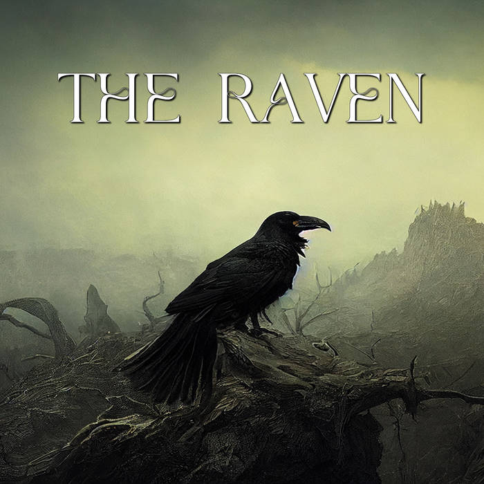

Poets
Top Recommended

"The Road Not Taken" by Robert Frost is a poem about the choices we make in life and the paths we choose to follow.
read more"Stopping by Woods on a Snowy Evening" by Robert Frost portrays a brief but poignant encounter between the speaker and the beauty of a snowy winter scene.
read moreThe poem "Happy Poem" by Jack Frost celebrates the joy and wonder of winter.
read moreThe poem is told through the account of a traveler who encounters a crumbling statue in the desert.
read moreThe poem tells the story of their passionate love, which was so intense that even the angels in heaven became envious.
read more